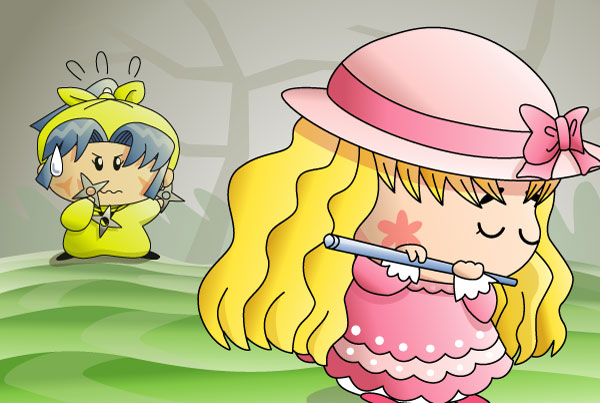

ヤマネ「ヤシチ兄様をかけて、勝負でございますわ！」
オトメ「ヤッくんは誰にも渡さないわ」
というようなバトルが実際に行われていたのかどうかは定かではありませんが、私としては恋のライバル同志で戦って欲しいなーなんて。戦術に長けたヤマネが優勢ですが、何をしてくるのか分からないオトメも不気味感漂うしで、どっちが勝つのかは予想ができません。とまぁ二人にモテモテのヤシチですが、アニメで事情を知っている人ならば、そんなヤシチに同情してしまいますね。なかなか残酷なアニメです。
オトメの笛を吹くポーズに苦労しましたが、何とかおさまったかな。決闘シーンの背景を描こうとしましたが、いざ描き始めるとうまく表現ができなくて、結局このような絵になりました。うーん、もっと勉強が必要です。
(2003/10/13)